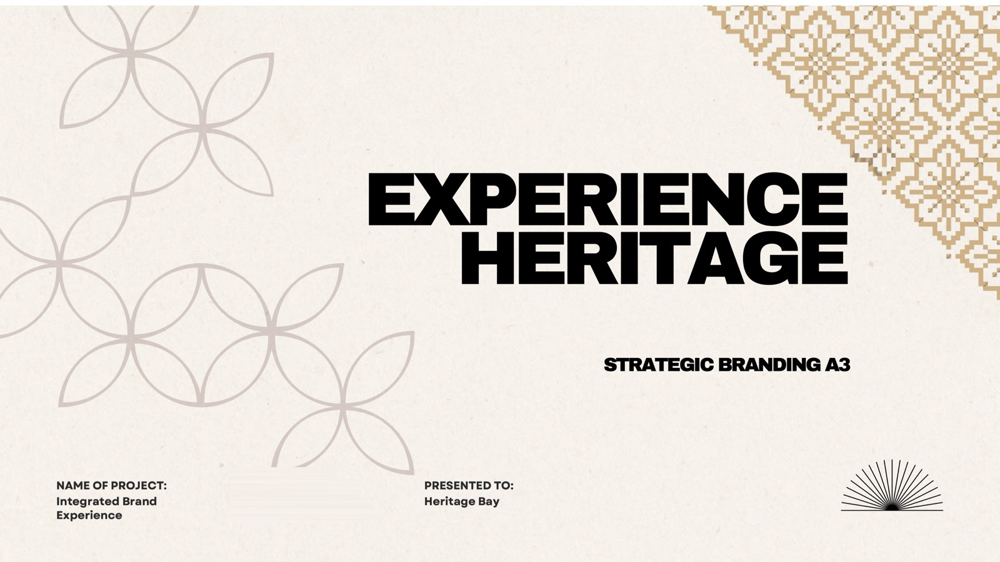

A phygital pop-up on polytechnic campuses that turns Heritage Bay shoppers into participants: discover the product, meet the artisan, then explore the culture behind it.
STUDENT WORK · SHARED AS A LEARNING REFERENCE

CLIENT
Heritage Bay
FORMAT
Campus pop-up + mobile website
KEY MECHANIC
Digital motif stamps unlock a discount
DELIVERABLES
Deck · 4 videos · Figma prototype
01 / OVERVIEW
The thinking.
From the gap they found to the experience they proposed.
01 / THE GAP
The challenge
Heritage Bay’s handcrafted products carry rich cultural stories, but many younger consumers don’t know the artisans or traditions behind them.
As a result, the products are read as decorative items rather than meaningful pieces of heritage — and ordinary retail displays leave little room to tell that story.
02 / THE IDEA
The proposal
Experience Heritage is a pop-up held at polytechnics. Visitors scan a QR code and move through three stations — Product, Artisan and Culture — using projection-mapped boards, audio storytelling and a mobile website.
Each station awards a digital motif stamp. A full set unlocks a discount, redeemable on the spot or saved to a Heritage Bay account.
03 / THE VALUE
Why it works
Builds on Assignment 2 by expanding a single mobile experience into a complete phygital ecosystem.
The journey starts offline and continues online, so engagement outlasts the visit.
Gives Heritage Bay campus awareness, immediate pop-up sales and a route to future online purchases.
02 / JOURNEY
How it unfolds.
The experience, step by step.
01EntranceSpot the pop-up, scan the QR code and land on the Experience Heritage website.
02Station 1 · ProductExplore Heritage Bay products with audio guidance. Earn the first motif.
03Station 2 · ArtisanA projection-mapped board tells the maker’s story. Earn the second motif.
04Station 3 · CultureProjection mapping reveals batik culture and history. Complete the set.
05Final counterA reward screen confirms the discount to use at the pop-up.
06WebsiteSign up, save the discount and keep shopping online.
03 / VISUALS
Selected slides.
Select a slide to enlarge it. The full deck is under Files.
P.03Proposal overview: three stages, three stampsP.04The problem: products seen as décor, not heritageP.08Phygital journey map across five stagesP.11Refinements since Assignment 2P.12Experience demonstration flow
04 / VIDEOS
See it in motion.
Recorded during the experience demonstration.
Experience walkthroughA visitor’s-eye tour of the pop-up, from the QR entrance to the stations. · 17.2 MBProjection map · ArtisanThe artisan-story projection used at Station 2. · 5.3 MBProjection map · CultureThe batik culture projection used at Station 3. · 17.8 MBQR code demoHow the entrance poster starts the digital journey. · 4.8 MB
FOR LEARNERS
What to look for.
How every stage of the journey map pairs a physical touchpoint with a digital one.
The stamp-and-reward loop: a simple mechanic that motivates visitors to finish all three stations.
The prototype refinements list — a clear record of what changed since Assignment 2 and why.
05 / PROTOTYPE
Try the prototype.
The team’s Figma file, with the screens and interactions behind the experience. It opens in Figma in a new tab; you may need to sign in to view it.